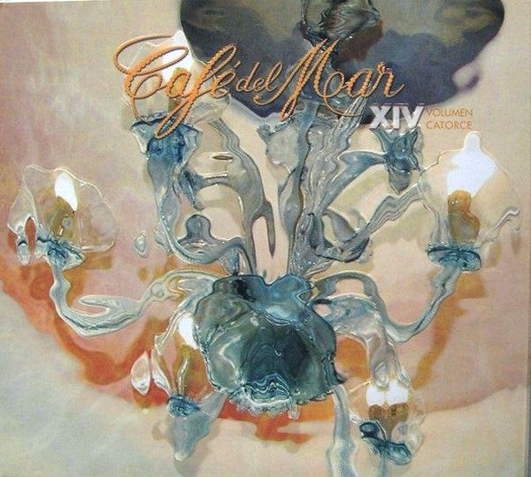

CD
Café Del Mar - Volumen Catorce
Various
Media: — · Sleeve: —
—
Personal
Discogs SuggestedCA$49.70
Discogs MedianCA$49.70
Discogs HighCA$49.70
- Physical Copy ID
- BB-CD-3173
- Year
- 2007
- Label
- Café Del Mar Music
- Catalog #
- 01-2007-64
- Country
- ESSpain
- Genre / Style
- Electronic · Future Jazz, Downtempo, Ambient